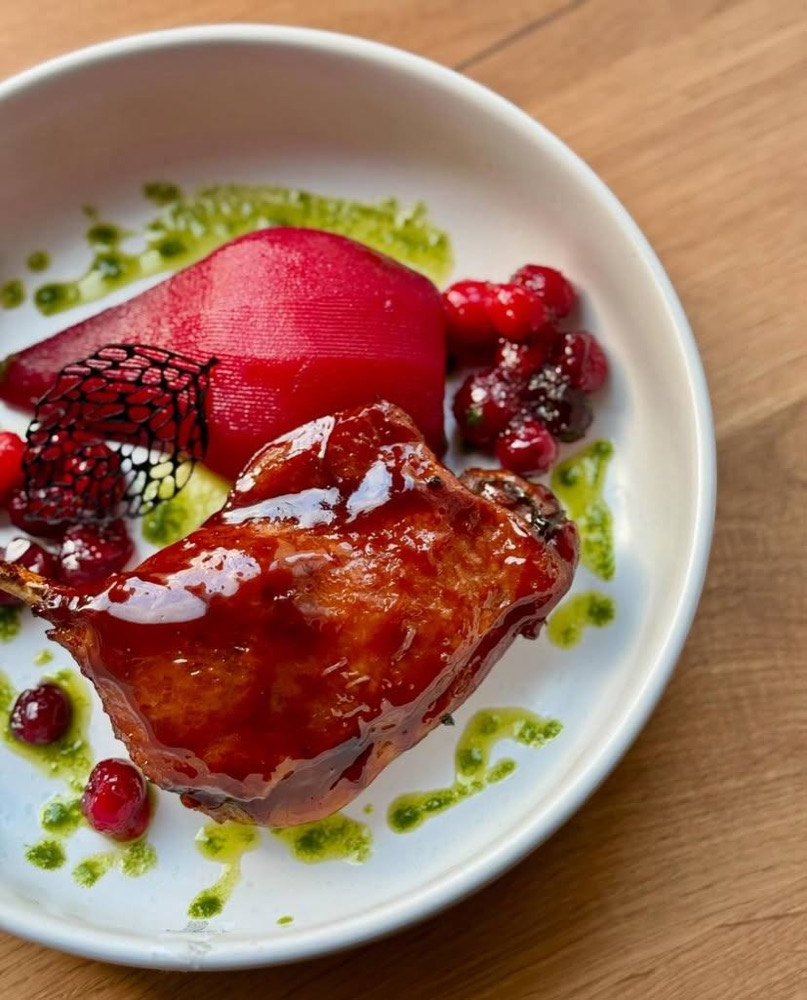

Відкриємо ваш заклад за техкартою шефа
Від порожнього приміщення до першого гостя за 1,5–3 місяці. Концепція, кухня, меню, обладнання й команда розписані до дрібниць, а ціна фіксована й залежить від площі: від $2 800.
Фастфуд · кав'ярні · піцерії · суші · бургерні · по всій Україні
 страваваш заклад
готовність1,5–3 місяці
шефДмитро · з 2012
страваваш заклад
готовність1,5–3 місяці
шефДмитро · з 2012
Картку складає бренд-шеф, а не менеджер агенції
Дмитро в HoReCa з 2012 року. За дипломом технолог харчової промисловості, має закордонну практику. Відкривав і перезапускав понад 20 закладів по Україні: від фуд-кортів до пивного ресторану.
Відкриваю не заради відкриття, а заради репутації. І з душею, бо люблю те, що роблю.
- В HoReCa
- з 2012 року
- Закладів
- 20+ відкрито й перезапущено
- Географія
- від Харкова до Кіровоградщини
- Освіта
- технолог харчової промисловості
- Запуски
- бренд-шеф мережі Red Cat Brewery, Харків




Так готує шеф, який складатиме меню для вашого закладу.